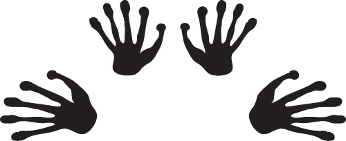

METARTONCLE

La bête de peur sociale ,cette créature
est la représentation des peurs des interactions sociales. Mélange de
trois animaux connus pour leurs yeux ( le tarsier, le pétoncle et la cuboméduse),
cet animal nous espionne en permanence,elle est responsable de cette impression d'être
juger et observer .

Habitat :
Alimentation :
Espérance de vie :
Taille :
Poids :
Zônes urbaines
insect et fruits
10 ans
25cm de large et 35cm de haut
1kg